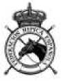

CLASICA 3
Concurso:
Jinete:
Fecha:
Juez:
Posición:
Caballo: _________________________________
Tiempo: 5'40" (solo como información) Filete simple opcional , , , ,__________________________________Edad mínima del caballo: 7 años
|
Movimientos |
Puntos |
(Ü o |
Corrección |
Coeficiente |
Nota final |
Directrices |
Observaciones | ||
|
1 |
A X |
Entrada a galope reunido. Parada saludo |
10 |
Calidad de los aires, parada y transiciones. Rectitud. Contacto y nuca. | |||||
|
2 |
C HP P |
Pista a mano izquierda Trote medio Trote reunido |
10 |
Regularidad y calidad del trote, reunión, equilibrio, incurvación; tamaño y trazado de la vuelta. | |||||
|
3 |
A DG C |
Doblar por la línea central 3 contracambios a la derecha e izquierda a 5, 10 y 5 m de la línea del centro, terminando a la derecha Pista a la derecha |
10 |
2 |
Regularidad y calidad del trote, mantener incurvación y ángulo. Reunión, equilibrio, fluidez. | ||||
|
4 |
MXK K |
Cambio de mano al trote largo Trote reunido |
10 |
Regularidad, elasticidad, equilibrio, remetimiento de posteriores. Alargamiento de los trancos y de la línea superior. | |||||
|
5 |
Las transiciones del trote reunido al largo y del largo al reunido |
10 |
Las dos transiciones, claridad. Regularidad, elasticidad, equilibrio, precisión y suavidad. Cambio de actitud. | ||||||
|
6 |
A FV (AFV) |
Paso medio Paso medio El paso medio |
10 |
La transición. Regularidad, relajación del dorso, actividad, amplitud, libertad de espaldas | |||||
|
7 |
VXR |
Paso largo |
10 |
2 |
Regularidad, relajación del dorso, actividad, amplitud, libertad de las espaldas. Transición al paso largo | ||||
|
8 |
R M Entre G y H |
Paso reunido Doblar a la izquierda Media pirueta a la izquierda |
10 |
Regularidad, actividad, reunión, tamaño, colocación e incurvación de la media pirueta. Tendencia hacia adelante, mantener los 4 tiempos. | |||||
|
9 |
Entre G y M |
Media pirueta a la derecha |
10 |
Regularidad, actividad, reunión, tamaño, colocación e incurvación de la media pirueta. Tendencia hacia adelante, mantener los 4 tiempos. | |||||
|
10 |
(RMG(H)G( H)G) |
El paso reunido |
10 |
2 |
Regularidad, relajación del dorso, actividad, acortamiento y elevación del paso, porte. | ||||
|
11 |
G H |
Salida a galope reunido a la izquierda Pista a la izquierda |
10 |
Precisión y fluidez de la transición. Calidad del galope. | |||||
|
12 |
SK K |
Galope medio Galope reunido |
10 |
Regularidad y calidad del galope, Alargamiento de los trancos y de la línea superior. Cambio de actitud. Transiciones. | |||||
|
13 |
A L |
Doblar por la línea central Circulo a la izquierda de 8 m. |
10 |
Regularidad y calidad del galope, reunión, equilibrio, incurvación; tamaño y trazado de la vuelta.. | |||||
|
14 |
LS |
Apoyar a la izquierda |
10 |
Regularidad y calidad del galope incurvación uniforme, reunión, equilibrio, fluidez. | |||||
|
15 |
H (HCM) |
Cambio de pie El galope reunido |
10 |
Calidad del galope. Reunión, equilibrio, equilibrio, fluidez, tendencia cuesta arriba, rectitud del cambio de pie. |
|
Movimientos |
Puntos |
JS o |
Corrección |
Coeficiente |
Nota final |
Directrices |
Observaciones | ||
|
16 |
MF F |
Galope medio Galope reunido |
10 |
Regularidad y calidad del galope, Alargamiento de los trancos y de la línea superior. Cambio de actitud. Transiciones. | |||||
|
17 |
A L |
Doblar por la línea central Círculo a la derecha de 8 m. |
10 |
Regularidad y calidad del galope, reunión, equilibrio, incurvación; tamaño y trazado de la vuelta. | |||||
|
18 |
LR |
Apoyar a la derecha |
10 |
Regularidad y calidad del galope incurvación uniforme, reunión, equilibrio, fluidez. | |||||
|
19 |
M |
Cambio de pie |
10 |
Corrección, equilibrio, fluidez, tendencia cuesta arriba, rectitud del cambio de pie. | |||||
|
20 a 23 |
HXF |
Cambio de mano por diagonal con tres cambios de pie |
10 |
Calidad del galope. Reunión, equilibrio. | |||||
|
21 |
El primer cambio de pie (después de H) |
10 |
Corrección, equilibrio, fluidez, tendencia cuesta arriba, rectitud del cambio de pie. | ||||||
|
22 |
Segundo cambio de pie (en X) |
10 |
Corrección, equilibrio, fluidez, tendencia cuesta arriba, rectitud del cambio de pie. | ||||||
|
23 |
Tercer cambio de pie (antes de F) |
10 |
Corrección, equilibrio, fluidez, tendencia cuesta arriba, rectitud del cambio de pie. | ||||||
|
24 |
(HXF) |
El galope reunido |
10 |
Calidad del galope, reunión, rectitud. | |||||
|
25 |
A X |
Doblar por la línea del centro Parada - inmovilidad - saludo |
10 |
Calidad del aire, de la parada y de la transición. Rectitud. Contacto y nuca | |||||
|
Salir de la pista por A al paso en riendas largas | |||||||||
|
Total |
280 | ||||||||
Notas de conjunto
1 Impresión General (Armonía y presentación, posición y asiento del jinete/amazona, corrección y efecto de las ayudas).
Total
A deducir
Error de recorrido:
1° vez = 0,5% del porcentaje total
2° vez = 1 % del porcentaje total
3° vez = Eliminación
Otros errores, no acumulativos para eliminación
• Entrar alrededor de la pista con fusta, ó
• Entrar en la pista con fusta, ó
• No entrar en la pista en los 45” después del toque de campana, ó
• Entrar en la pista antes del toque de campana, etc...
0,5% (puntos porcentuales) a descontar por cada error. Ver Art 429.8
10
300
|
Comentario general: | |
|
Total en %: |
Firma del Juez:
Copyright © 2022. Real Federación Hípica Española. Reproducción estrictamente reservada.
Revisión 2022 D-CL3- pág. 2